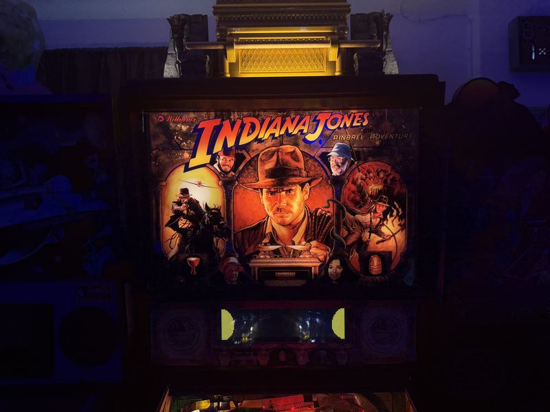
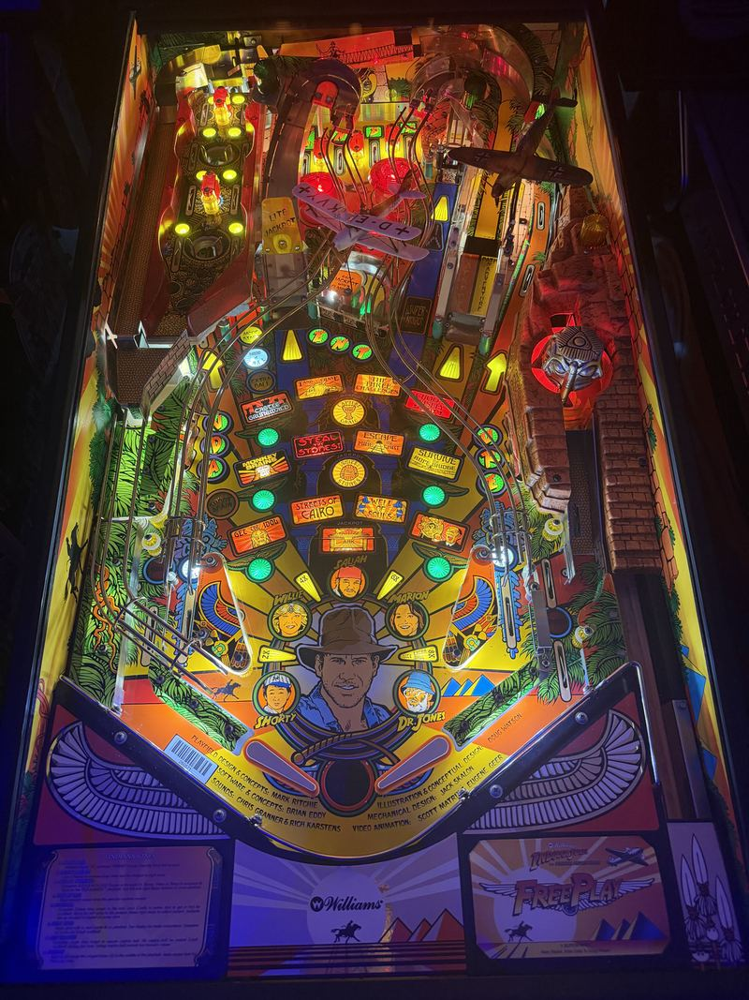

Indiana Jones
The Williams widebody from 1993, six modes deep and currently on the bench chasing an intermittent cold-boot gremlin.
Indiana Jones: The Pinball Adventure came out in 1993, at the exact moment Williams was at the height of its powers. It is a widebody — wider playfield, more room for toys — and it tries to fit all three films onto one machine, which is exactly as ambitious and as chaotic as it sounds. There is a mine cart, a rotating idol, a ball-eating Ark, and a mode select that behaves like a board game.
It is also a DCS machine. Williams' Digital Compression System arrived that year and replaced the tinny sample playback of earlier games with something close to a film soundtrack. On a machine built around John Williams' score, that mattered more than usual.


The playfield
Widebody means there is genuinely more to look at, and Williams filled every inch of it. The mine cart runs the right side, the idol sits center, and the ramps cross over each other in a way that takes a few games to read.

On the bench
This machine has an intermittent failure on cold boot. The interlock switch has been replaced and ruled out; a memory-protect switch is next in line. Classic 90s Williams diagnosis: one suspect at a time, and patience. Follow the bench log →
Work log
The most worked-on machine in the building. Most involved first.
- Full shop-out — Stripped, cleaned, rebuilt and reassembled.
- Rottendog main driver board — WDB089, replacing the original.
- Rottendog Fliptronics board — Flipper drive replaced alongside the driver board.
- ColorDMD fitted — Full-color display in place of the original dot matrix.
- Pin Sound Plus — Upgraded sound board — on a DCS machine built around the John Williams score, worth doing.
- Metal parts powdercoated — Legs, rails and hardware redone.
- Custom topper — Built by Elite Pinball Toppers.
- Custom planes — By Kornfreak.
- High-end reproduction backglass — The original was past saving.
- High-end pinball glass — Playfield glass upgraded.
- New gun set with trigger
- Speaker panel wood replaced — Reproduction panel.
- OPEN: cold-boot fault — Interlock switch replaced and ruled out. Memory-protect switch next.
Williams
1993. Widebody cabinet.
DCS
Williams' first year of digital compressed sound.
On the bench
Cold-boot fault under diagnosis. Plays otherwise.
Indiana Jones sits in the pinball row with Total Nuclear Annihilation, Ghostbusters and Rick and Morty. See the row →